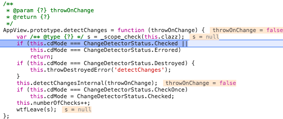
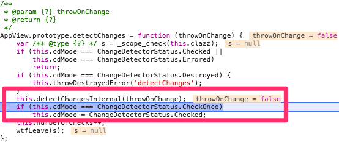
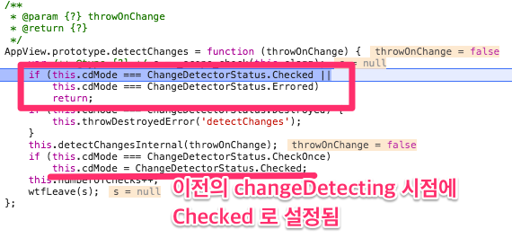

OnPush 개요
Angular 는 기본적으로 모든 Component 노드에 대해 Change Detection 을 한다. 그러나 OnPush 전략을 사용하면 컴포넌트에 바인딩된 Input 값의 변화가 없는 경우에는 Subtree 에 대해 Change Detection 을 하지 않아 비교처리를 줄일 수 있다.
동작 방식 (ChangeDetector 상태값)
Subtree 의 Change detection 이 발생하지 않는 이유
OnPush 가 적용된 컴포넌트에서 유발한 Change Detection 이 아닌 경우 아래와 같이 Change Detector 상태값(this.cdMode)이 Checked 상태가 되어 그 하위 View (Subtree) 들에 대한 change detecting 을 하지 않는 것이다.

그렇다면 이 상태값은 어떤 절차에 의해 변경되는 것인가?
Change Detector 상태값의 변화 과정
1) OnPush 가 적용된 컴포넌트와
2) 적용되지 않은 컴포넌트가 구현된 예제에서
Input 의 변경이 발생했을때 OnPush 가 적용된 컴포넌트의 Change Detection 상태 값을 비교해보자.
OnPush 가 적용된 컴포넌트의 Input 값이 변경된 경우
컴포넌트의 값 변경 시마다 CheckOnce 를 설정
OnPush 가 적용된 컴포넌트에 Change Detection 이 trigger 되면 markPathToRootAsCheckOnce 를 호출하여 CheckOnce 상태로 변경한다.
<코드. 컴포넌트가 트랜스파일링된 코드 발췌>
변경 시 최소 한번은 Check 하도록 하는 것이다.
따라서 위(Subtree 의 Change detection 이 발생하지 않는 이유)에서 언급한 것처럼 Subtree 의 Change Detection 을 Skip 하지않는다.

OnPush 가 적용되지 않은 컴포넌트의 Input 값의 변경된 경우
반면 OnPush 가 적용되지 않은 컴포넌트에서 Change Detection 이 발생한 경우 Change Detector 의 상태값은 Checked 상태로 유지되어 Subtree 컴포넌트의 Change Detecting 과정을 건너띄게 된다.

CD 의 상태값이 Checked 상태로 변경한 것은 CheckOnce 로 변경된 후 Subtree 의 Change Detection 시점에 Checked 로 변경하는 것이다.(위 코드에서의 주석참고)
정리
- OnPush 를 설정하면 컴포넌트의 ChangeDetector 는
CheckOnce상태를 갖게된다. - CheckOnce 로 설정된 컴포넌트는 Change Detection 작업 중
Checked로 상태를 변경한다. - 다른 컴포넌트에서 Change Detection 이 발생하더라도 OnPush 가 적용된 컴포넌트는 CD 상태값이 Checked(난 이미 체크했으니 볼필요없어!) 이므로 Subtree 컴포넌트의 Change Detection 처리는 하지 않는다.
- 그러나 OnPush 가 적용된 컴포넌트에서 Change Detection 이 발생한 경우 자신의 CD 상태값을 다시
Check Once상태로 변경하므로 SubTree 에 대한 Change Detection 을 한다.